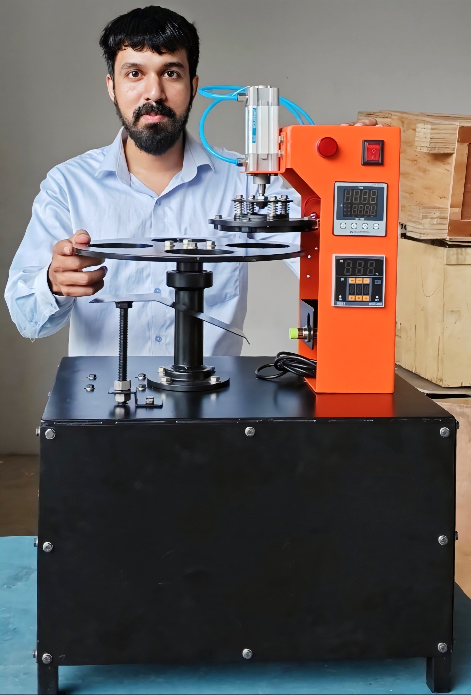

Rotary Cup Sealing System
R&D Design & Manufacturing Optimization

The Challenge
At Naveena Zeal Technologies, we needed to develop a high-precision rotary cup sealing system for the retail packaging market. The challenge was ensuring precise alignment between the sealing mechanism and the rotating cups while streamlining the manufacturing process.
My Approach
This project required a blend of technical design, vendor management, and hands-on assembly.
1. Design & Approval:
I used SolidWorks to create the full 3D assembly of the machine. I conducted design reviews and presented the final model to the Head of Department (HOD), securing approval to move into production.
2. Vendor & Workshop Coordination:
I didn't just design in isolation; I acted as the bridge between engineering and fabrication.
- I contacted third-party vendors to select the specific pneumatic systems required for the sealing action.
- I coordinated directly with workshop staff to ensure the design was manufacturable and to resolve fabrication queries immediately.
3. Procurement & Assembly:
I took ownership of the build phase. I personally sourced critical electrical components, including the proximity sensors needed for cup detection. I then physically assembled the machine structure myself.
4. Electrical Integration:
During the final stages, I assisted in the wiring process and coordinated with company technicians to integrate the sensors and pneumatic controls, ensuring the automation logic functioned correctly.
The Result
The detailed technical drawings and accurate BOMs streamlined the manufacturing process. By personally overseeing the pneumatics selection and assembly, I ensured the prototype functioned as intended and met the department's quality standards.
The Finished Product
The fully assembled unit, integrated with pneumatic sensors and wiring.
Back to Home